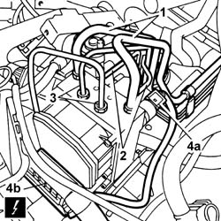
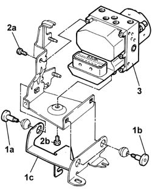

3340A10 HYDRAULIC ABS CONTROL UNIT - R+R
- Path
- Procedures > 33 BRAKES > 3340 ANTI-LOCK BRAKE SYSTEM (ABS) > 3340A ABS CHECK/ADJUSTMENT DEVICES > 3340A10 HYDRAULIC ABS CONTROL UNIT - R+R
- Kind
- repair procedure (removal / refitting; the operation number is the code)
- Applies to
- all engines; all production periods
- Interactive page
- https://sloeber94.github.io/elrnDB-fUlss/en/#/179007318
Applies to: all engines; all production periods
 Removing
Removing
 Refitting
RefittingOp. 5530B56 BATTERY DRIP TRAY COVER - R.R.
-Disconnect the negative battery terminal.
Applies to: all engines; all production periods
Op. 5010B18 CLIMATE CONTROL UNIT AIR INTAKE - R.R.
Op. 1048A10 AIR CLEANER FILTERING ELEMENT - REPLACE
1. Undo the connectors for the pipes from the master cylinder.
2. Undo the rear brake pipe connectors.
3. Undo the front brake pipe connectors.
- Collect the fluid in a suitable container.
4. Disconnect the electrical connections (4a) and (4b).

Applies to: all engines; all production periods
1. Undo the bolts (1a) and (1b) and release the electro-hydraulic control unit complete with mounting from the bracket secured to the bodyshell (1c).
2. Undo the fixing bolts (2a) and (2b).
3. Move the pipes aside and remove the ABS electro-hydraulic control unit.

Applies to: all engines; all production periods
Refitting
Removing- Position the electro-hydraulic control unit on the mounting and tighten the fixing bolts
- Position the electro-hydraulic control unit complete with mounting on the bracket secured to the bodyshell and tighten the fixing bolts.
- Tighten the front brake pipe connectors to the recommended torque.
 | Value - daNm | Fastening | Component | Ø |
|---|---|---|---|---|
. | (Pipes to front brakes) 1.5 | Connector | ABS HYDRAULIC CONTROL UNIT | - |
- Tighten the rear brake pipe connectors to the recommended torque.
| Value - daNm | Fastening | Component | Ø |
|---|---|---|---|---|
. | (Pipes to rear brakes) 1.5 | Connector | ABS HYDRAULIC CONTROL UNIT | - |
- Tighten the master cylinder pipe connectors to the recommended torque.
| Value - daNm | Fastening | Component | Ø |
|---|---|---|---|---|
. | (Pipes from master cylinder) 1.5 | Connector | ABS HYDRAULIC CONTROL UNIT | - |
- Connect the electrical connections.
Applies to: all engines; all production periods
Op. 0010T65 HYDRAULIC BRAKE SYSTEM BLEED AIR
Op. 0010T66 MANUAL GEARBOX OIL CHECK LEVEL AND TOP UP IF NECESSARY
- Connect the negative battery terminal.
Op. 5530B56 BATTERY DRIP TRAY COVER - R.R.
- Test the operation of the braking system.